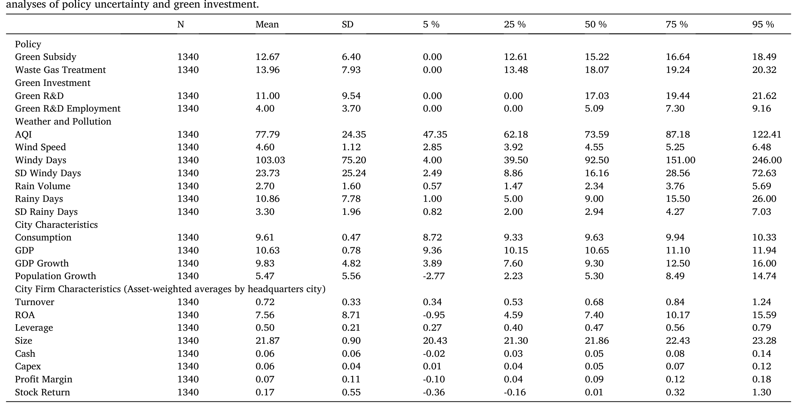
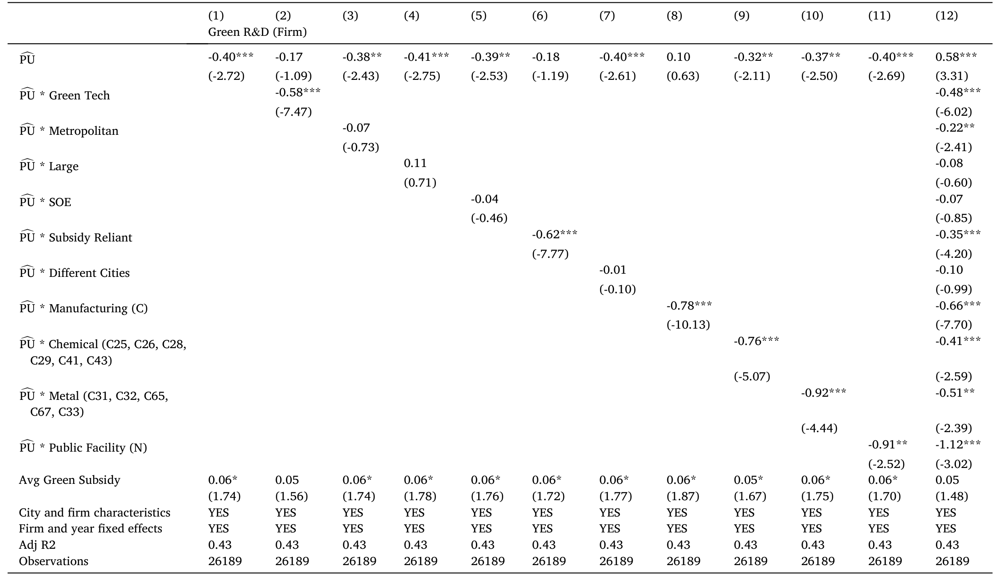
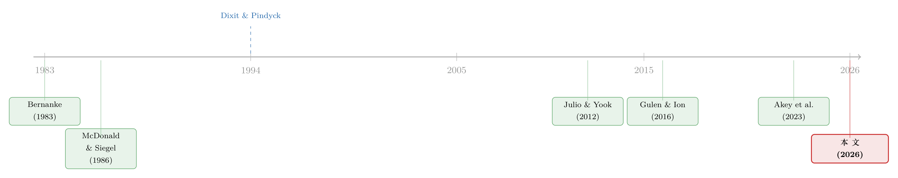

好心的补贴，为什么没能催出绿色创新？——当风和雨把政策搅成了「噪声」
本文读的是 Wang, Wurgler & Zhang (2026, Journal of Financial Economics)：政府发放环保补贴本是为了刺激绿色研发，但当补贴本身变得「不可靠」时，企业反而会按下暂停键。作者的巧思在于——让补贴变得不可靠的，竟是风和雨：天气扰动空气质量、空气质量牵动补贴分配，于是天气的「噪声」被悄悄塞进了政策里。一个城市的天气波动每上升一个标准差，当地企业的绿色研发投入就下降约 13%。
1 引言：一份本该奏效的补贴
让我们从一个看似无懈可击的逻辑开始。
污染是典型的负外部性。一家企业排放废气，成本由全社会承担，而它自己不必买单；于是从私人收益的角度看，那些「干净却不赚钱」的绿色技术项目，本来不值得投。经济学教科书给出的标准药方是：政府补贴。把补贴塞进项目的现金流里，让原本不划算的绿色研发变得划算，外部性就被「内部化」了。中国正是这样做的——从深圳 2012 年对循环经济技术直接补贴投资额的 20%–30%，到对新能源车（new energy vehicles, NEV）按续航里程给予的销售补贴，环保补贴几乎渗透到每一个被寄予厚望的绿色赛道。
逻辑很美。但现实里，这份补贴真的催出了它想要的绿色创新吗？
这正是本文要追问的。而作者给出的答案，带着一丝反讽：问题不在于补贴够不够多，而在于补贴够不够「稳」。一旦企业意识到这笔钱时有时无、说不准明年还在不在，它面对的就不再是一个「投或不投」的静态选择，而是一个经典的等待期权 (option-to-wait)——与其现在把钱砸进一个高度专用、几乎无法回收的绿色研发项目，不如再等等，看看补贴政策到底靠不靠谱。这种「再等等」的冲动，正是不可逆投资理论里压制投资的那股力量（Bernanke, 1983；McDonald and Siegel, 1986；Dixit and Pindyck, 1994）。
于是，一个自然的问题浮出水面：补贴的「不确定性」从哪里来？
2 真正关键的一步：让风和雨当工具变量
如果你只是观察到「补贴波动大的地方，绿色研发少」，那几乎什么都说明不了。因为补贴和投资可能同时被一只看不见的手牵动——地方政绩、政治周期、产业政策。补贴的不确定性很可能是内生的 (endogenous)（Akey et al., 2023）。这是政策不确定性这条文献最头疼的死结。
本文真正关键的一步，是找到了一个外生的、几乎与政治无关的不确定性来源：天气。
它的因果链条是这样的。中央在五年规划里把空气质量目标写成具体的 空气质量指数 (Air Quality Index, AQI) 数字，层层下压到省、市；地方官员据此向污染重的地区、污染重的企业分配补贴。听起来很合理。但麻烦在于——AQI 本身就被天气搅动着。论文开篇的 Fig. 1 给出了一组极具说服力的照片：北京同一栋楼，在 2014 年不同的工作日里，有时清晰可见、有时淹没在雾霾中；差别不在于当天的排放（一年之内排放是稳定的），而在于风速。风把颗粒物吹散，雨把颗粒物压到地面。天气一变，AQI 就变，地方官员据此分配的补贴也跟着变。
于是反转出现了：官员以为自己在「对症下药」，其实有相当一部分是在追着天气的噪声跑。一个城市如果天气本身忽好忽坏，它的 AQI 就会忽高忽低，补贴分配也就忽多忽少——这种波动与企业的真实减排努力毫无关系，纯粹是老天爷的脾气。作者正是用天气波动（具体是「有风天数」「有雨天数」围绕城市长期均值、用六年滚动窗口算出的标准差）作为补贴政策不确定性的工具变量 (instrument)。
这个设计的精妙之处，在于它干净地把「不确定性」从「水平」里剥离出来：作者始终控制住一个城市的长期平均补贴水平，问的是——在补贴平均给得一样多的两个城市里，那个补贴忽上忽下的城市，绿色研发是不是更少？
3 一个简单模型：补贴的方差为什么是主角
在动手做实证之前，作者先用一个极简的均值-方差模型把直觉讲透。这一节值得慢慢看，因为它把「为什么是补贴的方差、而非水平」说得明明白白。
考虑一家企业，期初借入资本投向两种技术。第一种是绿色技术 G，需要绿色研发投入，并能获得一笔不确定的补贴 S；按照中国补贴的常见结构，补贴直接作为一笔额外收益叠加进来，于是这项投资每单位的总毛收益服从
$$\tilde{R}_G \sim N\!\left(R_G + S,\; \sigma_G^2 + \sigma_S^2\right).$$
注意：补贴的不确定性 \(\sigma_S^2\) 直接进入了绿色技术回报的方差。第二种是传统技术 X（传统研发或一般资本开支），每单位毛收益服从
$$\tilde{R}_X \sim N\!\left(R_X,\; \sigma_X^2\right),$$
两者相互独立。企业以每单位 C 的毛成本借入全部资本（这是对财务约束/财务压力的一种简化刻画），并用均值-方差效用做决策：
$$\max_{G,\,X}\; G\,(R_G + S - C) - \frac{\gamma}{2}\,G^2(\sigma_G^2 + \sigma_S^2) \;+\; X\,(R_X - C) - \frac{\gamma}{2}\,X^2\sigma_X^2.$$
这里 \(\gamma\) 是风险厌恶系数。它是一个「替身」——不可逆性、调整成本、管理者风险厌恶，凡是让企业惩罚不确定性的力量，都被压缩进了这一个参数。
对 G 和 X 分别求一阶条件，在风险独立的均值-方差框架下，最优投资就等于「期望收益除以经风险厌恶调整后的方差」，干净利落：
以及
$$X^* = \frac{R_X - C}{\gamma\,\sigma_X^2}.$$
为了把「相对变化」看得更清楚，作者再写出绿色与传统投资之比：
$$\frac{G^*}{X^*} = \frac{R_G + S - C}{R_X - C}\times\frac{\sigma_X^2}{\sigma_G^2 + \sigma_S^2}.$$
由此可以读出三条可检验的比较静态（证明在线上附录）：
- (1) 补贴不确定性 \(\sigma_S^2\) 上升，会同时压低绿色研发的水平和份额——因为它只进入
G的分母，不碰X。 - (2) 平均补贴
S上升，会同时抬高绿色研发的水平和份额；可以把更高的S理解为更高的「补贴依赖度」，而补贴依赖度越高，政策不确定性对绿色份额的打击也越狠。 - (3) 借贷成本
C上升（通俗讲就是财务压力更大），虽然绿色和传统投资都下降，但绿色份额反而上升；同时，它也会放大补贴不确定性对绿色份额的冲击。
模型还顺手给出了一个漂亮的安慰剂检验 (placebo test) 设计：既然 \(\sigma_S^2\) 只进绿色技术的方差，那么这些因素对传统资本开支和传统研发就应当没有效应（或弱得多）。这一点后面会成为识别可信度的关键支撑。
4 数据：把补贴从财报附注里一条条「抠」出来
本文最硬核的数据，是手工搜集的。作者从 CSMAR 数据库里上市公司财务报表的附注中，逐条把环境相关的研发支出和政府补贴从中文里翻译、识别出来——靠的是一长串环保关键词（节能、环保、废气、脱硫、除尘、脱硝……），并人工逐条确认补贴确与环境有关。这些数据按总部所在地聚合到城市-年层面。
- 绿色研发 (Green R&D)：城市内企业环境相关研发的 RMB 价值取对数。2009–2019 年间年均约
4.865亿元。 - 绿色补贴 (Green Subsidy)：城市-年环境补贴的对数，年均原始值约
5150万元；另有「工业废气治理」支出（来自 EPSnet）作为政府对 AQI 关注度的独立佐证。 - AQI：来自生态环境部（MEPC）各大城市日度数据，样本城市年均 AQI 约
78（在美标里属「中度」，在中国标准里却被叫作「良」）。 - 天气：来自中国气象局（CMA），用以构造「有风天数」「有雨天数」及其滚动标准差。
样本是 2003 年起、主分析聚焦 2009–2019 的非平衡面板，覆盖最多 352 个城市（之所以停在 2019，是为了避开新冠对数据的扰动——而且作者提到，样本末段的效应其实更强）。Table 1 给出了主要变量的描述性统计。

Table 1
值得一提的是论文里两个生动的例子：山东鲁抗医药 2009 年拿到 380 万元环保补贴，随后逐年变成 510 万、150 万、110 万，2013–2016 跌到 20 万元以下，2017 又回到 60 万元；紫金矿业的环保补贴更是从 290 万一路跳到 2011 年的 3930 万，再回落到 900 万元以下。补贴的「忽大忽小」不是抽象假设，而是企业财报里活生生的现实。
5 主要结果：13% 的缺口，落在最该被激励的人身上
证据相当稳健。
第一，基准效应。 在控制住城市长期平均补贴水平之后，风与雨的波动相对于城市长期均值每上升一个标准差，当地企业的绿色研发投入下降约 13%。也就是说，哪怕两个城市平均拿到的补贴一样多，那个「天气更善变、补贴更飘忽」的城市，绿色研发明显更少。
第二，横截面异质性——也是最耐人寻味的部分。 受政策不确定性冲击最大的，恰恰是那些你最想激励的企业：绿色科技公司、制造业、化工企业；同时，按模型预测，补贴依赖度更高的企业、以及财务压力更大（高负债、低利息保障倍数）的企业，也更容易被政策不确定性吓退。换句话说，不确定性的板子，精准地打在了减排最该发力的那群人身上。Table 4 用一组刻画企业类型的指示变量，把这种异质性呈现得很清楚。

Table 4: FirmTypei∈j,t represents indicator variables for firm characteristics: green tech, metropolitan area headquarters, large size (top assets de
第三，不止是钱，还有人。 除了绿色研发投入，与环境技术相关的岗位招聘也被政策不确定性压低了。补贴飘忽，企业不仅不敢投钱，连人都不敢招。
第四，安慰剂站得住。 正如模型预测的，这些因素对传统资本开支和传统研发的影响要弱得多甚至没有——这正是识别可信度的关键：如果天气波动是通过某种「万能渠道」直接打压了所有投资，那传统投资也该一起掉；但它没有，掉的偏偏是依赖补贴、又高度不可逆的绿色研发。
（关于「绿色政策的意外后果」这一主题，本博客此前也聊过一篇——一道本意环保的法规如何带来了两个意料之外的结果，可参见《更高效，却没有更干净：一道绿色法规的两个意外》。）
6 文献脉络：从「等待期权」到「天气噪声」
把这篇论文放进它所在的谱系里，会看得更清楚。
最上游，是不确定性如何压制投资的经典理论。Bernanke (1983) 提出不可逆性 (irreversibility) 会让企业采取「观望」态度；McDonald and Siegel (1986) 把它精确化为「等待的价值」；Dixit and Pindyck (1994) 的《Investment Under Uncertainty》把这套实物期权语言系统化。本文绿色研发「高度专用、近乎沉没」的特征，把这种不可逆性推到了极致。
接着，文献从一般的「不确定性」转向具体的「政策不确定性 (policy uncertainty)」。Julio and Yook (2012) 用选举周期证明政治不确定性会拉低企业投资；Gulen and Ion (2016) 用 Baker-Bloom-Davis 的经济政策不确定性指数（Baker et al., 2016）给出了更广泛的证据。但这条线长期有一个软肋：政策不确定性往往是内生的（Akey et al., 2023）——政策因经济而变，投资也因经济而变。

然后，气候与绿色金融崛起，Stroebel and Wurgler (2021) 的调查显示，监管风险被企业列为当前面临的头号气候风险。可绿色金融文献里，关于「真实绿色投资」如何被政策不确定性影响的研究却出奇地少。
本文恰好站在这三条线的交汇处，并贡献了两样新东西：其一，用天气这把外生的尺子，干净地度量了补贴政策不确定性，绕开了内生性死结；其二——也是更具概念性的贡献——它揭示了一种全新的政策不确定性来源：当政策制定者被「显著但成因难辨」的现象（雾霾）牵着走时，政策本身就会产生不确定性。这与传统上研究的政治冲击截然不同，而且可推广到气候政策、金融监管等一切「必须对成因不明的突发冲击仓促做出反应」的场景。
7 评论与延伸（Q&A + 研究方向）
(a) 几个可能的疑问
Q：为什么不直接用补贴的波动来衡量不确定性，非要绕到天气？
因为直接用补贴波动会陷入内生性。补贴和投资可能被同一批政治、产业因素同时驱动，「补贴飘忽→投资减少」的相关性里混着反向因果和遗漏变量。天气波动（且是六年滚动窗口的低频波动）几乎与企业的减排努力和地方政绩无关，却能通过 AQI 传导到补贴分配，因此是一个干净的外生工具。
Q：既然控制了平均补贴水平，那剩下被识别的到底是什么？
正是模型里的 \(\sigma_S^2\)——补贴的方差，而非均值。两个城市平均补贴一样多（同一个
S），但一个城市的补贴忽上忽下（高 \(\sigma_S^2\)）。模型说，方差只进绿色技术回报的分母，所以它单独压低绿色投资。实证把「水平」剥离掉，留下的就是这层「不确定性」效应。
Q：13% 会不会只是天气直接影响了生产或研发，而不是通过补贴？
这是最值得担心的排他性约束问题，作者用两点回应。其一，工具是长期天气波动（六年滚动标准差），不是当期天气，很难解释为对生产的即时冲击。其二，安慰剂检验显示传统资本开支和传统研发几乎不受影响——若天气有一条「万能」的直接渠道，传统投资该一起掉，但它没有。掉的恰恰是依赖补贴的绿色研发。
Q：这究竟是「等待期权」还是「管理者风险厌恶」在起作用？
模型刻意不区分。参数 \(\gamma\) 是一个替身，把不可逆性、调整成本、管理者风险厌恶等所有「惩罚不确定性」的力量都装了进去。本文的目标是证明「补贴不确定性压制绿色投资」这一定性结论稳健，而非分解出具体是哪条心理或技术渠道在主导。
Q：为什么受冲击最大的是绿色科技、制造、化工，而不是别的行业？
因为这些企业的绿色研发最依赖补贴（补贴依赖度高），且其绿色资产高度专用、近乎沉没（不可逆性极强）。按模型，高补贴依赖度会放大政策不确定性对绿色份额的打击。讽刺的是，这些恰恰是你最想重点激励的减排主力。
Q：这套机制是中国特有的吗？
不是。作者强调它揭示的是一类更普遍的现象：当政策必须对「显著、紧迫、但成因不清」的冲击仓促反应时，政策本身就会内生出不确定性。气候政策（人为升温与自然波动难以切分）、金融危机中的监管，都是同构的场景。中国只是提供了一个变量齐全、补贴普遍的理想实验场。
(b) 几个可能的研究问题与提案
1. 补贴政策不确定性与重污染企业的信用利差。 【经济故事】如果政策不确定性压低了重排放企业的绿色投资与未来减排能力，债权人理应要求更高的风险补偿；天气驱动的补贴波动可能直接抬高这些企业的信用利差 (credit spread)。【可行性】中。需要中国信用债二级市场报价 + 本文的天气工具，按发行人总部城市匹配；识别可沿用本文的工具变量思路，难点在于剥离行业层面的共同冲击。
2. 外资持有人对政策不确定性的反应。 【经济故事】外资机构通常对政策不确定性更敏感、信息劣势更大。天气驱动的补贴波动是否会让外资在「天气善变」城市的企业里减持，尤其在重污染或绿色科技板块？【可行性】中。可用 Bond Connect / QFII 的持仓数据按城市-行业匹配天气波动工具；这与我自己关于外资公司债持有人与流动性的研究方向天然相关，识别上可借本文工具，但外资持仓的颗粒度是约束。
3. 政策不确定性与绿色债券的二级市场流动性。 【经济故事】补贴前景越不确定，绿色项目现金流越难定价，投资者分歧越大，绿色债券的流动性 (liquidity) 可能恶化（买卖价差走阔、成交萎缩）。【可行性】中。需要绿色债券逐笔成交/报价数据 + 城市天气波动；难点是绿色债券样本量与「贴标」口径的噪声。
4. 把「显著性驱动的政策不确定性」搬到美国。 【经济故事】本文最具概念性的贡献是「显著但成因难辨→政策不确定性」。在美国，EPA 的 AQI 监测同样受天气扰动，地方执法与处罚强度是否也追着天气噪声跑？【可行性】低到中。美国监测站点密度高、执法更程序化，天气噪声的传导可能被稀释，需要细颗粒度的执法与许可证数据来检验。
8 我的判断与参考文献
这篇论文最让我佩服的，是它把一个「软」概念——政策不确定性——用一把「硬」尺子量了出来。天气作为工具，既外生又有清晰的传导链条（天气→AQI→补贴），还配上了一个干净的安慰剂（传统投资不受影响）。再叠加那个极简却切中要害的均值-方差模型，把「为什么是补贴的方差、为什么受伤的是高依赖度和高财务压力的企业」讲得滴水不漏。13% 这个量级，对一项被寄予厚望的政策工具而言，是个不容忽视的损耗。
要说对识别的担忧，我有两点。其一，工具的排他性仍可被进一步追问：长期天气波动是否还通过劳动力供给、健康、迁移等渠道间接影响企业（文献里这些渠道都有证据，如 Hanna and Oliva, 2015）？安慰剂检验缓解了这一担忧，但没有彻底关闭。其二，绿色研发数据是从财报附注里人工识别的，关键词翻译与口径难免引入测量误差，虽然这类误差通常偏向于削弱而非夸大结果。
后续我最想看到的，是把这套「显著性驱动的政策不确定性」从投资延伸到融资侧：当补贴变得飘忽，重排放企业和绿色科技企业的债务定价、外资持有结构、二级市场流动性会如何重排？那将把本文的「真实投资」故事，接到信用市场与气候金融的定价机制上去。
参考文献
- Akey, P., Julio, B., Liu, Y. (2023). Endogenous Policy Uncertainty. Working paper.
- Baker, S.R., Bloom, N., Davis, S.J. (2016). Measuring economic policy uncertainty. Quarterly Journal of Economics 131, 1593–1636.
- Bernanke, B. (1983). Irreversibility, uncertainty, and cyclical investment. Quarterly Journal of Economics 98, 85–106.
- Branstetter, L., Li, G., Ren, M. (2023). Picking winners? Government subsidies and firm productivity in China. Journal of Comparative Economics 51, 1186–1199.
- Dixit, A.K., Pindyck, R.S. (1994). Investment Under Uncertainty. Princeton University Press, Princeton.
- Gulen, H., Ion, M. (2016). Policy uncertainty and corporate investment. Review of Financial Studies 29, 523–564.
- Hanna, R., Oliva, P. (2015). The effect of pollution on labor supply: Evidence from a natural experiment in Mexico City. Journal of Public Economics 122, 68–79.
- Julio, B., Yook, Y. (2012). Political uncertainty and corporate investment cycles. Journal of Finance 67, 45–83.
- McDonald, R., Siegel, D. (1986). The value of waiting to invest. Quarterly Journal of Economics 101, 707–728.
- Panousi, V., Papanikolaou, D. (2012). Investment, idiosyncratic risk, and ownership. Journal of Finance 67, 1113–1148.
- Stroebel, J., Wurgler, J. (2021). What do you think about climate finance? Journal of Financial Economics 142, 487–498.